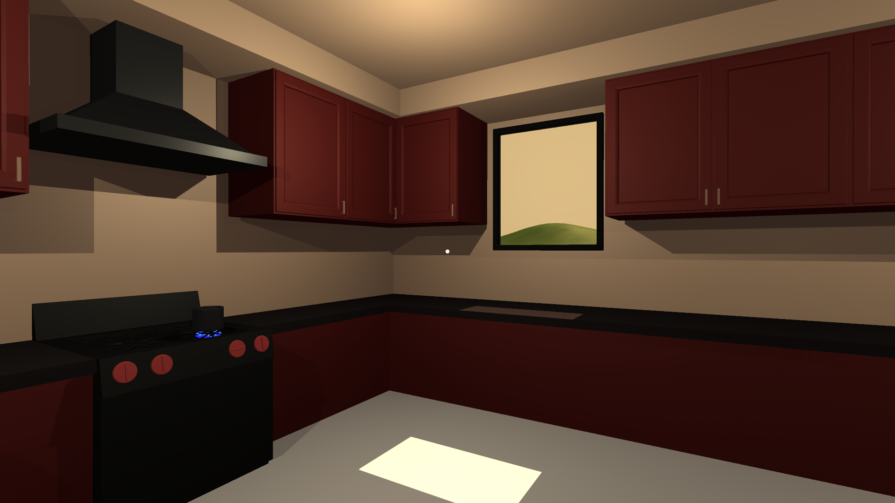

My final interactive was built on my knowledge of Ma, Minimalism from the previous projects, and Vignette. The experience I wanted to convey was a very mundane one, the act of boiling water in the evening while the sun sets. Watching the sunset while boiling water for dinner or tea can be both a relaxing experience and a frustrating one. I wanted to capture both of these feelings. The water in my interactive takes 5 real world minutes to boil which is around the same time it takes real life water to boil. The saying a watched pot never boils is what I was thinking of. Sometimes I feel like I am standing over the water for ages but at the same time the colours of the sunset can be beautiful and a distraction from mundane tedious tasks. I used minimalist techniques for the basic layout of the room, everything can be seen and understood at once. I also used minimalism and Ma when it comes to the lighting, the growing shadows and the sun moving across the floor. I am most familiar with vignette writings where they capture a snapshot of life similar to the haiku and I worked to capture those hours/minutes in a small environment. I also limited the user’s interactions, they only get to turn the stove on to boil water, they then are either forced to watch for the water boiling for completion or they can look out the windows and at the changing colours of the sky. I did this after I accidentally gave the user too much freedom in my previous work, Endless Drive.
While this interactive was effective in how boring it is, it might have been too effective since during open demonstrations people walked away from it because they either thought it was over or didn’t know what to do after turning on the stove. I should have added a timer or a checklist to let the user know that the experience was working as intended and that they should wait.